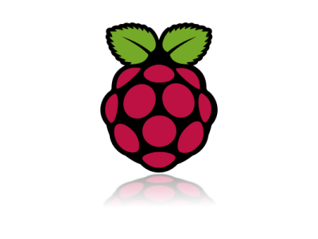

our AMS
and Steffen Tröster
Robot
by Johannes Magrafand Steffen Tröster
Agenda
- task
- used hardware and software
- image registration
- stepper motor controlling
- iterations and implementation
- results and improvements
Task
"The robot should find and move a colored ball into a colored goal on a flat ground."
Used Hardware
- Raspberry Pi as controller 
- Raspberry Pi camera module
- stepper motor with driver
-
3D printed construction

Raspberry Pi
- 10 of 40 GPIO Pins used
- USB Port for WLAN
- I2C for Pi Camera
- 700MHz CPU
Used Software
- python as programming language

- Raspbian linux as OS
- OpenCV for image processing
Ball Detection
Hough Circle approachSquare Detection
Convex Hull approach
Building Process
- constructing elements for the printer
- Implementing object detection
- building our robot and implementing movement
- combining all together and implementing actual task
Construction
1#
2#


Demo 1
Demo 2
Improvments
- Performance Tuning with Threading
- Use of Robot Operating System (:ROS)
Questions?
- https://github.com/stetro/AMSRobot